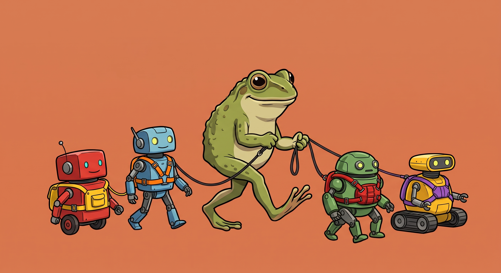

🧽 The Pond #12: Taming robots
Also: come learn about digital independence 🐸
by Ada Homolova · September 30, 2026

Hello my dear frosches! 🐸
September was all about cleaning, and we made a lot of stuff. Catch up on it below. October brings two very different topics: who controls our digital infrastructure, and how to build your own AI agent setup.
Read all about it below.
Happening at The Pond
🏰 Digital sovereignty on Wed 21 October, 14:00 CET · Sign up
Digital sovereignty is the talk of the town in Europe. But what does it actually look like in practice? We talk to Santi van den Toorn, who helps organisations get closer to sovereignty: what digital sovereignty is in the first place, why we want it, and what stands in the way. Join us in this discussion at The Pond!
🪢 It’s all a harness, baby on Tue 27 October, 14:00 CET · Sign up
Ever heard of an AI harness? They’re everywhere, and you’re probably already working with one, even if you don’t recognize it yet. Together with our in-house robot-whisperer Johan Schuijt we’ll look at a few different ones and learn what a harness actually is. Once we’re all comfy with that, we’ll build our own. Come hack with us at The Pond!
Made at The Pond
🧽 Data cleaning is glorious: the recording of the session with Jonathan Stoneman and me is up. We go through the messes you'll meet in data and clean them up live, with practical demos in several tools. (The dirt itself hides stories!)
🧼 OpenRefine meets AI: Hervé Letoqueux showed how to supercharge OpenRefine with LLMs and turn messy data into investigation-ready datasets. Missed it live? The video is here.
🫧 The same donor, three names: how clustering actually works: the newest blog post cleans messy donor names in OpenRefine, one clustering algorithm at a time: fingerprints, phonetic matching, and nearest neighbor.
Mentorships
Want to level up your data skills with 1:1 personal attention and hands-on guidance? Book one, two, three or four 1:1 sessions at any time, and we can build each session around whatever you're working on.
What we're reading
🧺 A three-part series on building a data cleaning workflow by Crystal Lewis: from planning the workflow to cleaning sample data in a standardized way, with examples in R. Part 2 and Part 3 included, obviously.
🔌 An LLM extension for OpenRefine: shared in the run-up to Hervé's session, and exactly what it says on the tin: bring language models into your OpenRefine workflows.
📦 Hervé's companion repo for the OpenRefine + local LLM talk: a full Ollama + Ministral 3B setup and 15 graded transformations, reproducibly. Great if you want to follow along with the video above.
🧩 There's now an Obsidian plugin for OpenAleph search: browse and search your investigation documents straight from your notes. There's a tutorial video too.
🎩 Tired of typing? Dictate instead: Moonshine runs speech recognition on your own device, right in the browser. No cloud, no account.
⚖️ Ollaya serves open decision models locally: type a decision question, get a calibrated answer in milliseconds, fully on your machine. Curious what people will build with this.
Are you enjoying this newsletter? Let me know by hitting a reply on this email!
With 💚 and 🐸,
Ada
The Pond is a community by and for nerds in the newsroom. Join us!